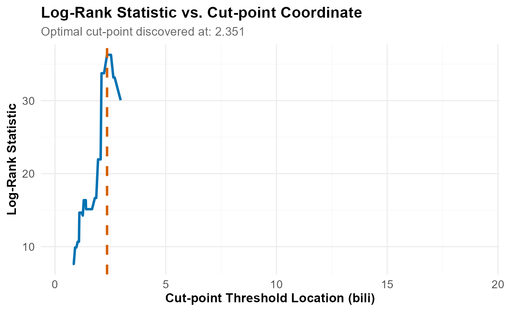

Plot Optimisation Curve from a Systematic Search
Source:R/plotting_functions.R
plot_optimisation_curve.RdPlots the metric from a `find_cutpoint()` systematic search (`num_cuts = 1`). It plots the statistic (e.g., Log-Rank, HR, p-value) against all evaluated cut-points.
Helps confirm the optimum and assess sensitivity.
References
Altman, D. G., Lausen, B., Sauerbrei, W., & Schumacher, M. (1994). Dangers of Using "Optimal" Cutpoints in the Evaluation of Prognostic Factors. *JNCI: Journal of the National Cancer Institute*, 86(11), 829-835. doi:10.1093/jnci/86.11.829
Examples
data(crc_virome)
fit <- find_cutpoint(
data = head(crc_virome, 40),
predictor = "Alphapapillomavirus",
outcome_time = "time_months",
outcome_event = "status",
num_cuts = 1,
method = "systematic"
)
#> ℹ Running systematic search...
#> ℹ Testing for 1 cut-point(s)...
#> ✔ Systematic search complete.
#>
#> ── Optimal Cut-point Analysis for Survival Data (Systematic) ───────────────────
#> • Predictor: Alphapapillomavirus
#> • Criterion: logrank
#> • Optimal Log-Rank Statistic: 0.3205
#> ✔ Recommended Cut-point(s): 1.957
if (!any(is.na(fit$optimal_cuts))) {
plot_optimisation_curve(fit)
}
#> `geom_line()`: Each group consists of only one observation.
#> ℹ Do you need to adjust the group aesthetic?
